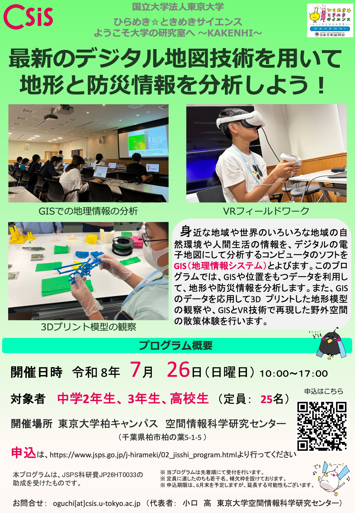

ひらめき☆ときめきサイエンス「最新のデジタル地図技術を用いて地形と防災情報を分析しよう！」の開催概要、注意事項についてまとめたページです。本ページは申込者への連絡を想定したもので、新たに参加者を募集するためのページではありません。（2026/6/13更新）

| 時間 | 内容 |
|---|---|
| 9:30〜10:00 | 受付（集合場所:柏キャンパス総合研究棟 6F） |
| 10:00〜10:10 | 開講式（あいさつ、科研費の説明） |
| 10:10〜10:30 | 講義「GIS とは?地理空間情報とその活用」（終了後 10 分休憩） |
| 10:40〜12:10 | 実習 1「GIS を用いた Web ハザードマップの読み取りと分析」 |
| 12:10〜13:00 | 昼食 |
| 13:00〜14:30 | 実習 2「GIS を用いた地形と災害情報の分析」（終了後 10 分休憩） |
| 14:40〜15:05 | クッキータイム・大学生との交流・質疑応答（終了後 5 分休憩） |
| 15:10〜16:40 | 実習 3「VR、3D プリントによる地形・災害情報の可視化」（終了後 5 分休憩） |
| 16:45〜17:00 | 修了式（アンケート記入、未来博士号授与） |
| 17:00 | 終了、解散 |
昼休憩時には、ランチタイムトークとして、昼食をとりながら聞ける講演（20分程度）を予定する可能性があります。
東京大学柏キャンパスへのアクセスは、東京大学CSISホームページをご確認ください。構内の駐車は不可ですので、可能な限り公共交通機関をご利用ください。
| 注意事項 | 対応 |
|---|---|
| 申し込み者は、必ず当日の朝、体温を計測してください。 | 平熱を超える場合や風邪の症状がある場合は参加できません。 |
| 欠席、遅刻等の連絡 | 申し込み後に案内を送付します。何かご要望があればそのメールアドレスにご連絡ください。欠席の際は、円滑なプログラムの実施のため、お早めにお知らせください。 |
| 自然災害のおそれがある場合による中止 | 当日、プログラムの開催が困難と判断した場合、午前8時までに参加者へ中止の連絡をします。 |
| 自動車の駐車（構内での駐車不可） | 自動車でお越しになる場合は、構内での駐車が不可のため周辺の有料駐車場等をご利用ください。 |
| 保険加入 | こちらで、受講生全員を対象としたレクリエーション保険に加入しています。 |
以下は過去に、実際にあった質問と回答です。本年度も全員と関連する質問をいただいた場合は、質問の概要とその回答を順次追加します。原則、電話による質問対応はできかねますため、お問い合わせの場合はメールでの連絡をお願いいたします。
A.会場の広さの都合上、事前に参加希望をお知らせください。
A. ございません。同伴者は受講者とともに移動していただきます（各教室の後ろで椅子にすわり、プログラムを見学ください）。
A. 問題ありませんが、参加証授与等の関係があるため、事前に連絡をください。
A. 当日は、構内のすべての学食が空いていません。参加者は、必ず昼食をご持参ください。※大学（会場）の最寄りに、ファミリーマートがあります。
A. 設備やセキュリティ対策などの点で、イベント以外の用途でWi-Fiを利用いただくことはできません。参加者向けにWi-FiのIDとPASSを配布することもありません。